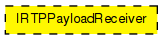
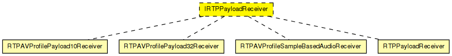

Interface for RTP Payload Receivers.
These modules are internal to the RTP module; instances are created and connected dynamically by RTPProfile.
The following diagram shows usage relationships between types. Unresolved types are missing from the diagram.
The following diagram shows inheritance relationships for this type. Unresolved types are missing from the diagram.
| Name | Type | Default value | Description |
|---|---|---|---|
| outputFileName | string |
// // Interface for \RTP Payload Receivers. // // These modules are internal to the RTP module; instances are created // and connected dynamically by RTPProfile. // moduleinterface IRTPPayloadReceiver { parameters: string outputFileName; gates: input profileIn @labels(RTPInnerPacket); output profileOut @labels(RTPInnerPacket); }